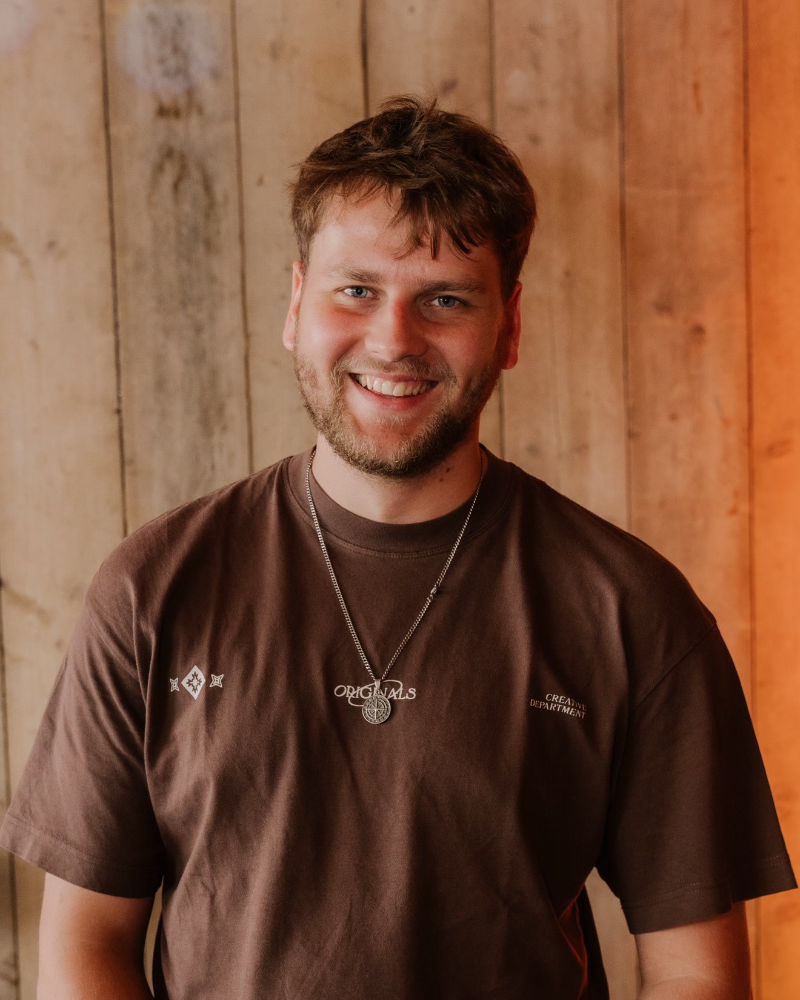
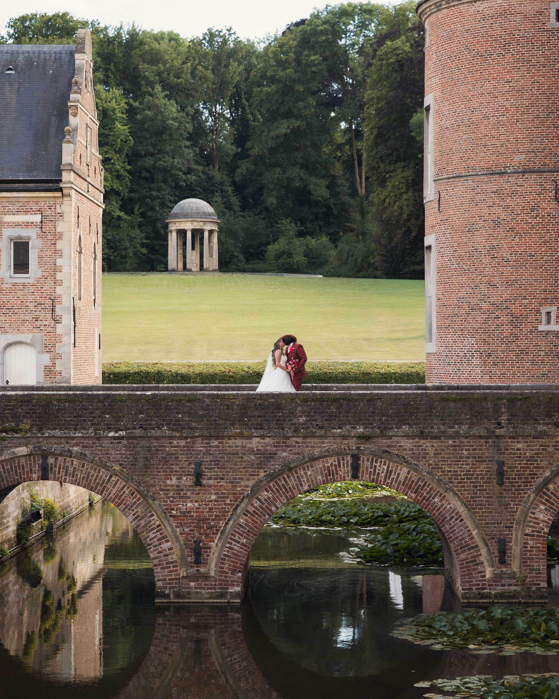
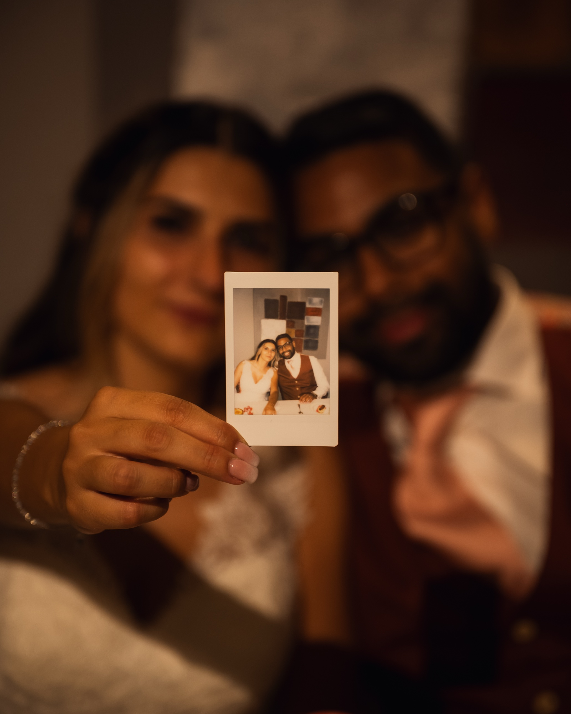
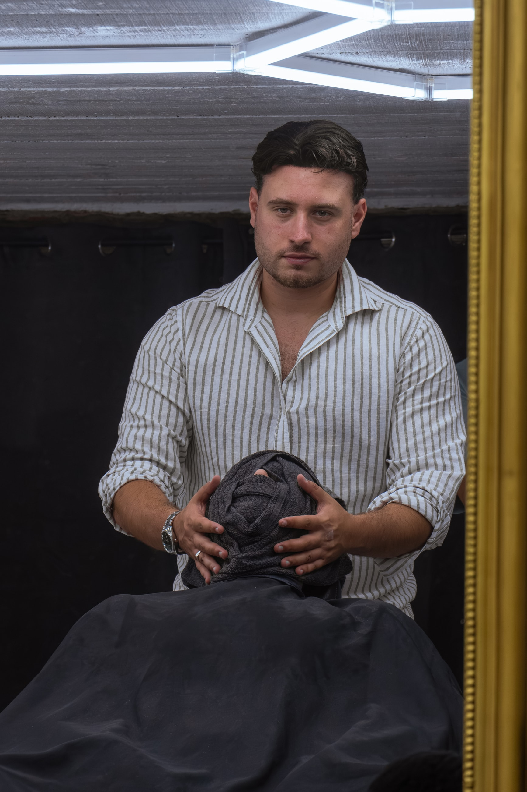
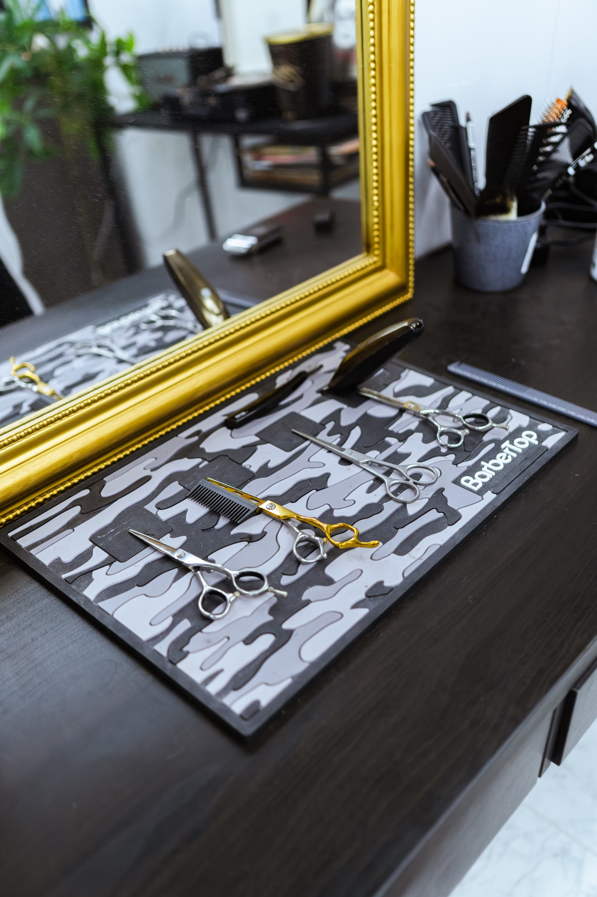

Je suis Nicolas, photographe indépendant basé à Ath. Mariages, couples, portraits, événements : j'aime photographier les gens tels qu'ils sont.
Ce qui me plaît dans ce métier, c'est de capter des moments vrais, sans les mettre en scène, et de voir la réaction de mes clients quand ils découvrent leurs photos.

Ma façon de travailler
Je vous guide juste assez pour que vous soyez à l'aise, puis je laisse la place aux vrais moments : un regard, un rire, une main qui se serre.
Côté retouche, je reste sobre : une lumière soignée, des couleurs fidèles, et vous, tels que vous êtes.
Voir mon travail


Je suis Nicolas, photographe indépendant basé à Ath. Pour les commerces et les entreprises, je réalise des photos qui montrent votre lieu, votre équipe et votre savoir-faire.
Des photos prêtes pour votre fiche Google, vos réseaux et votre site — et si vous n'avez pas encore de site, je peux aussi vous en créer un.
Je viens sur place, au moment qui vous arrange, et je m'adapte à votre activité. On prépare ensemble la liste des photos utiles : vitrine, équipe, produits, ambiance.
Le résultat : des photos naturelles, qui donnent envie de pousser la porte.


Racontez-moi votre projet : je vous réponds sous 48 h.
Me contacter